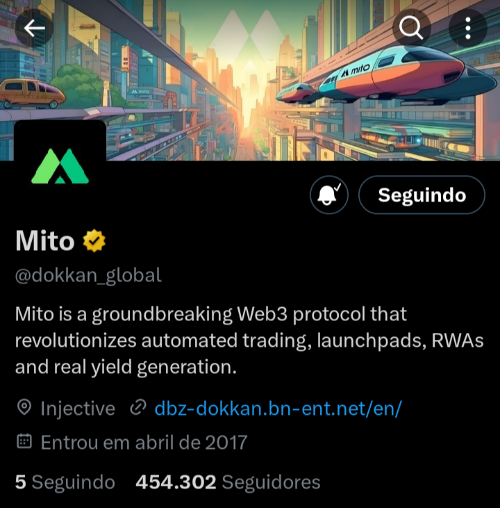
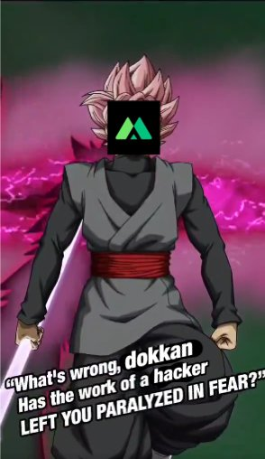
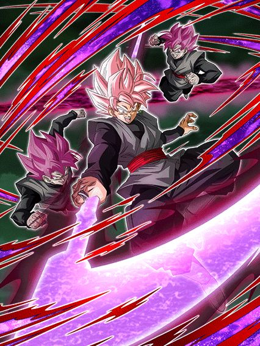
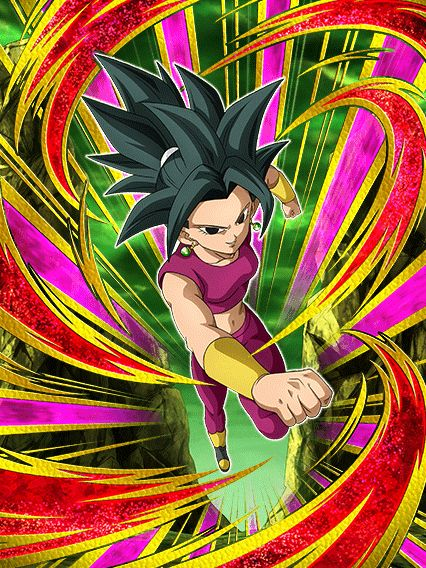
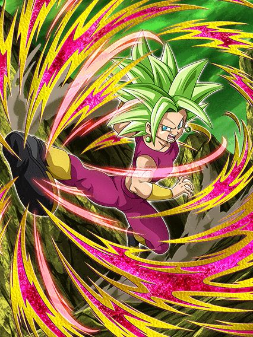
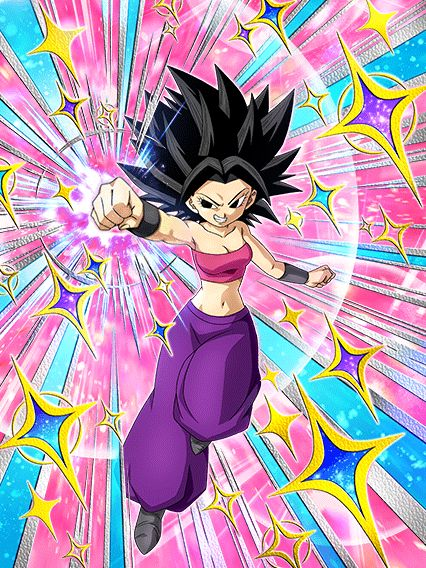
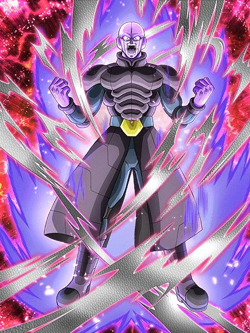

Eu juro q não sei como vão juntar as versões desse jeito.
Tipo, a proposta dessa celebração é boa, trazer de volta os LRs da celebração de download pra eles não levarem 1 ano pra voltar, mas pô, algumas pessoas tavam teorizando que aqui poderiam colocar o LR do tanabata adiantado no global pra facilitar na junção das versões mas não, é uma celebração filler estranha, bizarro.

Parece q alguém não gostou do goku black einKKKKKKKK
20 de fevereiro de 2024, 1 dia depois de revelarem o kit e animações do goku black, do nada o dokkan global muda de foto e de nome
Isso foi levemente hilário pelo timing em q aconteceu, logo depois de eles revelarem um card que aparentava ser bem decepcionante
Acho que a melhor parte foi que antes de recuperarem o acesso, a conta ainda fez questão de apagar os posts que tinham feito sobre o goku black, oq deixa tudo ainda mais perfeito

Isso foi lendário, obrigado a qualquer um q fez isso, omatsu provavelmente estava em shock (ou não pq odeiam o global)
")
Se a gente não soubesse que eventos vem no aniversário, ele seria muito bom.
Esse goku black é um card extremamente problemático
Pra começar ele lidera Super Bosses, oq é legal já q ele traz a categoria adiantada pro global, e tmb Corroded Body and Mind.. e só
O dokkan fest de 2024 não tem uma 170% pra 3 categorias, beleza então né
Continuando ele tem animações bem zuadas, parece muito que ele era um card de 2021 q ficou guardado lá e decidiram usar agora, tem frames bonitos sim, não tá no nível da kale ou blue boys agl, o fato é q pros padrões do dokkan, principalmente depois do aniversário no jp, era de se esperar muito mais
Bom, falando do card em si, ele precisa de um time super bosses pra ter redução de dano (omega shenron 2: a vingança), pq ele tem 30% de redução mas isso é só antes de atacar (por favor não jogue esse cara no slot 1 achando q ele vai tankar)
E aí tem a grande mecânica dele: lançar ataques adicionais básicos.
É o seguinte: a cada rainbow orb q vc pegar vc lança 1 adicional básico, e não, não é exagero, realmente não tem como esse adicional ser um super, oq é ridículo
Apesar disso, ele tem um adicional garantido com chance de ser super oq é ok, e lança um super adicional garantido se atacar 5 vezes, então no geral vc vê isso acontecer se pegar pelo menos 3 rainbow orbs.. só tem um probleminha.. O GOKU BLACK NÃO É ORB CHANGER
E assim, vc realmente quer pegar esses adicionais básicos, pq a cada ataque q ele fizer, ele ganha 30% de ATK e DEF no turno, independente de ser super ou não, então se vc atacar muito vai acumular um dano e defesa bons, mas fica nisso, vc tá travado pelo rng dos orbs, vai realmente levar tudo na sorte?
Bom uh, esse cara tem um domínio então, expansão de domínio? 😳

Belo domínio amigo, agora tente escolher se usa esse domínio ou o do broly 💀
Antes de reclamar mais, eu AMO essa arte, slk
Bom, o goku black só fica por 4 turnos nessa forma então eh, ele fica "melhor" entre algumas aspas
Além do aumento em alguns números na passiva dele, AGORA ele vira orb changer então ele cria seus próprios orbs né, além de ser efetivo contra tudo e manter as mecânicas q ele já tinha
Por algum motivo a redução de dano inteira q ele tinha antes é toda antes de atacar agora, boa sorte tankando supers
Ah, e se vc está preocupado com os adicionais básicos dele, não se preocupe! Pois agora o goku Black lança adicionais com 10% DE CHANCE DE SEREM SUPERS, WOW DOKKAN, OBRIGADO POR DEIXAR ESSE CARD COMPLETAMENTE QUEBRADO NOS INCRÍVEIS 4 TURNOS Q ELE EXISTE
Eu realmente detesto isso, não tem necessidade de chances tão horríveis, principalmente pq isso é temporário e ainda sim, vc nunca vai usar o domínio desse cara
Sim sim, nesse momento o broly ainda não existe no global, mas não faz diferença, pq tmb tem o zamasu fusão
Me responde, vc prefere dar 20% de ATK e DEF pra super bosses, ou ser COMPLETAMENTE INVENCÍVEL por 5 turnos? Qual domínio vc acha mais útil num evento difícil ein?
Esse lançamento foi triste pq o goku black consegue sim competir no omega e etc, mas nos eventos q vem por aí no aniversário, impossível pra ele
E pra piorar ele não tem um card secundário pra ajudar, triste.
Atualização de Junho de 2024: O Goku Black na verdade veio com uma celebração incompleta no Global.
Ele tinha sim um card secundário que foi parar na Celebração do Freeza pq o global é muito esquisito
Não só isso, mas o Goku Black também foi genuinamente buffado em ambas versões, já que agora ele também lança um Super Attack adicional toda vez que faz 10 ataques, o que não é muito difícil não
Talvez eu tenha tratado esse cara com muita ignorância no lançamento dele..

Ah, foi mal a demora, ela tá no milésimo super adicional..
Caros amigos, que eza insano.
A kefla simplesmente tem o maior dano do mundo, com um total de zero restrições
Pra começar ela tem 300% de DEF, que com os stats de eza ficam muito absurdos já, e como se não bastasse, ela ainda ganha 50% de chance de desviar se pegar simples 3 orbs, e num time Universe 6 que praticamente ninguém precisa de ki, ela fica super tranquila
Ela tmb tem muito ATK no kit mesmo e ainda stacka 50% de ATK no super, e tipo, kkkkk o valor é muito alto, ela tá no turno 1 mandando 10 milhões de dano sendo q ela stacka e transforma
Pra deixar o kit perfeito ela ainda lança um super adicional garantido se vc pegar 6 orbs, q aí já é mais complicadinho mas de novo, o time não precisa muito de orbs então não é muito impossível
Enfim, tudo q eu falei até agora foi a kefla na forma base, ela só fica assim por 1 turno e automaticamente se transforma no próximo

Todas as porcentagens dela aumentam MAIS, e os orbs necessários pra umas coisas diminuíram, agora são só 2 orbs pra ter o desvio e a defesa a mais
Ela tmb ganha um buff extra de 50% de DEF se pegar 4 orbs então é, desvio e bastante defesa é muito bom, tem como n
O adicional garantido ainda é com 6 orbs, mas pô, os valores dela aumentaram e ela continua stackando, tem nem doq reclamar slk
Ela também só fica nessa forma por 1 turno e vai pro ssj 2 no turno seguinte, ou seja, no melhor dos casos vc vê ela no turno 5 ou 6 oq ehhhh ok, já que ela não é muito fraca na forma base como outros cards por aí

O hack de dano infinito.
Os buffs de orbs que ela tinha antes agora são permanentes, ou seja, a chance de desvio, defesa a mais e tudo, agr não tem restrição de orb, e ao invés disso ela agora ganha coisas a mais com orbs, e slk, isso é absurdo
Com 2 orbs pegos ela tem 160% de ATK e 60% de DEF a mais, isso já é muita coisa pq ela JÁ TEM muito ATK e DEF
Agora ela lança um super adicional garantido com 4 orbs pq sim, ela pode né
E com 6 orbs ela vira o melhor EZA de dokkan fest, simples assim
Com os 6 orbs ela lança mais um super adicional garantido e aumenta a chance de desvio de 50% pra 70%, E ELA CONTINUA STACKANDO
Em resumo a kefla dá um dano absurdamente alto, tem uma defesa muito boa, 70% de chance de desvio e o dano q já é absurdo vai aumentando cada vez mais
Agora me diz, é tão difícil colocar adicionais assim em outros cards? A kefla lança 3 supers garantidos enquanto tem cards com chances horríveis (sim tô falando do goku black novo), vai entender qual a ideia dos cara
Vale lembrar que a kefla tem a active onde ela muda orbs PHY pra STR pra ajudar ela mesma e fica super efetiva, mas a condição continua ruim então ehhhh
No geral, card insano, EZA em níveis absurdos, e global first ainda slk, brabo

A garota do desvio se tornou o próprio desvio.
Sabe, existem alguns cards no dokkan que seguem uma regra simples: "Independente do que fizerem no EZA do card, ele irá sair quebrado do mesmo jeito"
Cards nessa regra são o Gohan TEQ por exemplo, e a Caulifla também se encaixa nessa regra.
Pô, a Caulifla TEQ sempre foi o card engraçado que desvia garantido contra Pure Saiyans ou Universe Survival Saga, e só isso dava muito valor pra ela, mesmo que o dano dela fosse podre e a defesa horrível, daí oq eles fazem com o EZA? Dão pra ela exatamente oq ela precisava
Para os desconhecidos, o buff da Caulifla de ganhar 8% de chance de desvio por aliado Universe 6 ou Peppy Gals é um buff q conta uma categoria por vez e não as duas juntas, ou seja, se um aliado é U6 e também Peppy Gals, ela ganha 16%
Lembrando, ela mesma também conta pra esse buff
O fato é que agora ela ganha 8% de ATK e DEF com isso tmb, ou seja, num time completo Universe 6 e Peppy Gals ela tem 112% de chance de desviar oq é hilário, e tmb 112% de ATK e DEF, oq já é um buff muito bom
Ela tmb ganhou uma habilidade diferenciada de dar 16% de ATK por 2 turnos pra geral depois de desviar 6 vezes, e olha, com desvio garantido fica fácil né
Pra finalizar ela ganha mais 160% de ATK e lança um super adicional garantido se tiver uma Kale no turno, e a Caulifla stacka né, devagar, mas stacka
E é com isso amigos, que eu posso confirmar que sim, a Kale dokkan fest tem oficialmente um time, ela é usável agora e tem todo seu potencial a mostra
Para os fãs da Kale que sobreviveram no deserto sozinhos sem time por praticamente 1 ano inteiro, parabéns

Tenho orgulho de vocês.

Pelo menos não é obrigatório levar a Caulifla no time.
Bom a Kale é mais focada em ter stats altos e stackar mais rápido doq desviar
Os buffs dela funcionam do mesmo jeito q a Caulifla TEQ mas com Pure Saiyans e Peppy Gals, oq deixa a condição levemente pior pra ter o buff máximo mas tudo bem
Ela ainda tem o super adicional garantido contra um inimigo Pure Saiyans ou USS mas agora tem outro super adicional garantido se o time inteiro for Universe 6 (é o time dela, quem iria adivinhar né)
E ela tem mais dano e ganha defesa ativa se tiver uma Caulifla no turno, é basicamente isso
O legal da Kale é q ela stacka e dá pra stackar bem rápido e tals então dependendo de como a luta seguir, talvez a defesa ativa nem seja obrigatória a ter, já q a build óbvia pra ela é desvio, então é, stackando defesa, desviando e tendo defesa ativa, fica difícil de matar ela, belo EZA.

Desvia ou morre?
A Vados é uma suporte pra Realm of Gods, Siblings Bond, Bond of Master and Disciple e Universe 6, mas uma parte da passiva dela só ativa com U6 e RoG então não faz sentido mas blz
Ela até tem uns valores de ATK e DEF interessantes, tem uma cura de 40% de HP se vc cair abaixo de 60%, e tem orb change pra rainbow se uma das 2 categorias q mencionei antes tiver no turno
Mas é, o grande elemento é só a 70% de chance de desviar mesmo
Tipo, eu não sei se a Vados morreria instantaneamente pós super de uns ataques básicos, mas por precaução, reze pelo desvio sempre né

Eu acho ele legal mas não dá pra negar q ele é meio ehhh..
Esse Hit é um card totalmente ofensivo com um monte de ATK e DEF, wow, impressionante mesmo
Ele tem 50% de chance de critar e tem várias chances de stunar o inimigo pq todo Hit faz isso né
E as mecânicas mais legais q ele tem são ter 50% de chance de desviar mas só depois de atacar, oq significa que ele é uma vítima da pessoa chamada Zamasu red zone, e ele quebra 1 ação do inimigo toda vez q atacar 2 vezes, e não, não precisa ser super
No geral é isso, o Hit é um card q dá dano, tem uma defesa decente e o desvio, mas AOEs irão matar ele instantaneamente
Pelo menos com essa celebração, o time Universe 6 ganhou bastante buffs, então dá pra escolher se leva esse cara ou não pra uma luta
Você chegou ao fim dessa página!
Obrigado por ler tudo, e fica a vontade pra ver outras